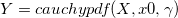
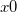
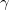

/math-9dd4e461268c8034f5c8564e155c67a6.png "x") (input, double)
(input, double)The Cauchy distribution, also called the Lorentzian distribution or Lorentz distribution, is a continuous distribution describing resonance behavior.
 returns the pdf of the cauchy distribution with location parameter  and scale parameter , evaluated at the values in X.
(input, double)